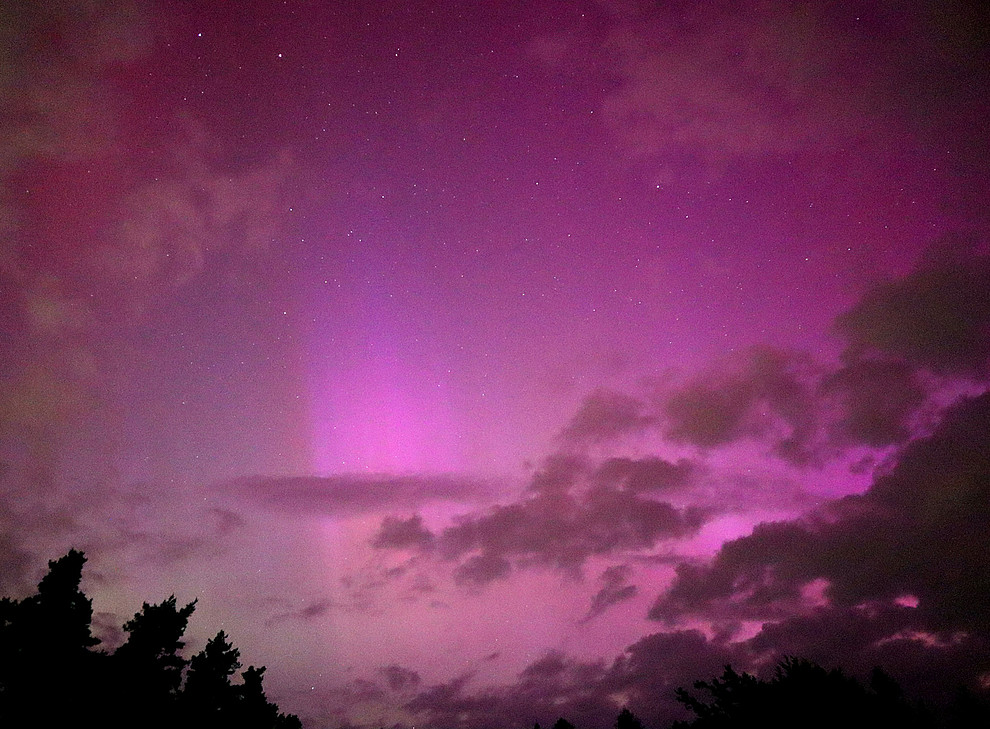

Welcome to my website!
My name is Florian Koller and I'm a postdoctoral research assistant currently working at Queen Mary University of London. You can find my CV, an overiew of my research, and a list of my publications and talks on this website. Have a look at my space-related photography and art projects as well!
I received an MSCA Postdoctoral Fellowship, which I will work on starting October 2025 at Queen Mary University of London. Here is the news article about my successful application.

I was invited as a speaker at the campfire event of the EGU Solar-terrestrial early career scientist division. Had a fun time networking with my international colleagues and talking about fellwoship proposal writing!

I observed aurora in Graz, Austria during the huge geomagnetic storm on 11 May 2024. The University of Graz featured my pictures and interviewed me on the topic.

A news report on my APJL article about the influence of solar wind types on the terrestrial magnetosheath.
Have a look at my EGU -ST Blog post about my 2023 Paper "Magnetosheath Jet Formation influenced by Parameters in Solar Wind Structures.

In 2023 we organized an international workshop on magnetosheath jets in Graz.
My 2nd place for the student poster competition at the European Solar Physics Meeting (ESPM) 2021.

This webpage was recently launched and is still actively developing.